<meta charset="utf-8">
<title>MigraTrack User Journey</title>
<link rel="preconnect" href="https://fonts.googleapis.com">
<link rel="preconnect" href="https://fonts.gstatic.com" crossorigin>
<link rel="stylesheet" href="https://fonts.googleapis.com/css2?family=Plus+Jakarta+Sans:wght@400;500;600;700;800&family=JetBrains+Mono:wght@400;500&display=swap">
<style>
/* Layout: a numbered journey. Each step has its story on the left and the device screens on the right; phone width stacks them. */
:root {
  --bg: #0e0e10;
  --surface: #18181b;
  --surface-2: #232327;
  --fg: #f4f1f2;
  --muted: #a69c9f;
  --caption: #e6bcbd;
  --pink: #ff2d55;
  --green: #30d158;
  --cyan: #00e0ee;
  --amber: #ff9f0a;
  --line: rgba(255, 255, 255, 0.09);
  --shot-ring: rgba(255, 255, 255, 0.14);
  --font-ui: "Plus Jakarta Sans", -apple-system, "SF Pro Text", "Segoe UI", sans-serif;
  --font-data: "JetBrains Mono", ui-monospace, "SF Mono", Menlo, monospace;
  color-scheme: dark;
}
@media (prefers-color-scheme: light) {
  :root:not([data-theme="dark"]) {
    --bg: #f7f3f4; --surface: #ffffff; --surface-2: #efe7ea; --fg: #1b1719; --muted: #6c6064;
    --caption: #9a2f4c; --pink: #d6003a; --green: #13803a; --cyan: #00727e; --amber: #a85f00;
    --line: rgba(27, 23, 25, 0.10); --shot-ring: rgba(27, 23, 25, 0.16); color-scheme: light;
  }
}
:root[data-theme="light"] {
  --bg: #f7f3f4; --surface: #ffffff; --surface-2: #efe7ea; --fg: #1b1719; --muted: #6c6064;
  --caption: #9a2f4c; --pink: #d6003a; --green: #13803a; --cyan: #00727e; --amber: #a85f00;
  --line: rgba(27, 23, 25, 0.10); --shot-ring: rgba(27, 23, 25, 0.16); color-scheme: light;
}

* { box-sizing: border-box; }
body {
  background: var(--bg);
  color: var(--fg);
  font-family: var(--font-ui);
  font-size: 15px;
  line-height: 1.55;
  -webkit-font-smoothing: antialiased;
}
.page { max-width: 1180px; margin: 0 auto; padding-inline: 20px; padding-block: 40px 72px; display: grid; gap: 56px; }

h1, h2, h3 { margin: 0; text-wrap: balance; letter-spacing: -0.01em; }
p { margin: 0; }
.eyebrow { font-size: 11px; font-weight: 700; letter-spacing: 0.12em; text-transform: uppercase; color: var(--caption); }

/* Intro */
.intro { display: grid; gap: 18px; max-width: 760px; }
.intro h1 { font-size: clamp(30px, 5vw, 44px); font-weight: 800; line-height: 1.08; }
.intro h1 em { font-style: normal; color: var(--pink); }
.intro p { color: var(--muted); font-size: 16px; max-width: 64ch; }

.facts { display: grid; grid-template-columns: repeat(4, minmax(0, 1fr)); gap: 1px; background: var(--line); border: 1px solid var(--line); border-radius: 16px; overflow: hidden; }
.fact { background: var(--surface); padding: 16px 18px; display: grid; gap: 4px; min-width: 0; }
.fact b { font-size: 20px; font-weight: 800; line-height: 1.25; font-variant-numeric: tabular-nums; }
.fact span { color: var(--muted); font-size: 13px; }
.fact b.ok { color: var(--green); }

/* Contents */
.toc { display: grid; gap: 12px; }
.toc ol { list-style: none; margin: 0; padding: 0; display: flex; flex-wrap: wrap; gap: 8px; }
.toc a {
  display: inline-flex; align-items: center; gap: 8px; padding: 7px 12px 7px 8px; border-radius: 999px;
  background: var(--surface); border: 1px solid var(--line); color: var(--fg); text-decoration: none; font-size: 13px; font-weight: 600;
}
.toc a:hover { border-color: var(--pink); }
.toc a:focus-visible, .shot:focus-visible { outline: 2px solid var(--cyan); outline-offset: 3px; }
.toc a .n { width: 22px; height: 22px; border-radius: 50%; display: grid; place-items: center; font-size: 11px; background: var(--surface-2); font-variant-numeric: tabular-nums; }
.toc a .d { width: 7px; height: 7px; border-radius: 50%; }

/* Steps */
.journey { display: grid; gap: 0; }
.step {
  display: grid; grid-template-columns: 56px minmax(0, 330px) minmax(0, 1fr); gap: 0 28px;
  padding-block: 36px; border-top: 1px solid var(--line); scroll-margin-top: 16px;
}
.step:last-child { border-bottom: 1px solid var(--line); }
.num {
  width: 44px; height: 44px; border-radius: 50%; display: grid; place-items: center;
  font-weight: 800; font-size: 15px; font-variant-numeric: tabular-nums;
  border: 2px solid var(--pink); color: var(--pink);
}
.step.watch .num { border-color: var(--green); color: var(--green); }
.story { display: grid; gap: 12px; align-content: start; min-width: 0; }
.story h2 { font-size: 21px; font-weight: 700; line-height: 1.25; }
.story p { color: var(--muted); }
.story p strong { color: var(--fg); font-weight: 600; }
.device { display: inline-flex; align-items: center; gap: 6px; font-size: 11px; font-weight: 700; letter-spacing: 0.1em; text-transform: uppercase; }
.device::before { content: ""; width: 8px; height: 8px; border-radius: 50%; background: currentColor; }
.device.phone { color: var(--pink); }
.device.watch { color: var(--green); }
.device + .device { margin-left: 12px; }
/* Not a grid: a grid makes each text run and <code> a separate cell, and the label drifts away from its value. */
.check {
  position: relative;
  font-family: var(--font-data); font-size: 12px; line-height: 1.5; color: var(--fg);
  background: var(--surface); border: 1px solid var(--line); border-radius: 10px; padding: 9px 11px 9px 29px;
}
.check::before { content: "✓"; position: absolute; left: 11px; top: 9px; color: var(--green); font-weight: 700; }
.check code { font-family: inherit; color: var(--cyan); word-break: break-word; }

.shots { display: flex; flex-wrap: wrap; gap: 22px 18px; align-content: start; min-width: 0; }
figure { margin: 0; display: grid; gap: 8px; align-content: start; width: 182px; max-width: 100%; }
figure.wide { width: min(560px, 100%); }
figcaption { font-size: 12.5px; line-height: 1.4; color: var(--muted); }
.shot {
  display: block; width: 100%; padding: 0; border: 0; background: none; cursor: zoom-in;
  border-radius: 26px; overflow: hidden; box-shadow: 0 0 0 1px var(--shot-ring), 0 10px 28px rgba(0, 0, 0, 0.28);
  transition: transform 160ms ease, box-shadow 160ms ease;
}
.shot:hover { transform: translateY(-2px); box-shadow: 0 0 0 1px var(--pink), 0 14px 30px rgba(0, 0, 0, 0.32); }
.shot img { display: block; width: 100%; height: auto; }
figure.watch { width: 158px; }
figure.watch .shot { border-radius: 40px; }
figure.wide .shot { border-radius: 14px; }
figure.flat .shot { border-radius: 18px; }

/* Results */
.section-head { display: grid; gap: 8px; margin-bottom: 18px; }
.section-head h2 { font-size: 26px; font-weight: 800; }
.section-head p { color: var(--muted); max-width: 70ch; }
.table-wrap { overflow-x: auto; border: 1px solid var(--line); border-radius: 14px; }
table { width: 100%; border-collapse: collapse; min-width: 640px; font-size: 13.5px; }
th, td { text-align: left; padding: 11px 14px; border-bottom: 1px solid var(--line); vertical-align: top; }
tr:last-child td { border-bottom: 0; }
th { font-size: 11px; letter-spacing: 0.1em; text-transform: uppercase; color: var(--caption); background: var(--surface); font-weight: 700; }
td code { font-family: var(--font-data); font-size: 12px; color: var(--cyan); }
.pill { display: inline-block; padding: 2px 9px; border-radius: 999px; font-size: 12px; font-weight: 700; white-space: nowrap; }
.pill.pass { background: color-mix(in srgb, var(--green) 16%, transparent); color: var(--green); }
.pill.note { background: color-mix(in srgb, var(--amber) 16%, transparent); color: var(--amber); }
.pill.sim { background: var(--surface-2); color: var(--muted); }

.notes { display: grid; grid-template-columns: repeat(auto-fit, minmax(300px, 1fr)); gap: 14px; }
.note { background: var(--surface); border: 1px solid var(--line); border-radius: 14px; padding: 16px 18px; display: grid; gap: 8px; align-content: start; min-width: 0; }
.note h3 { font-size: 15px; font-weight: 700; display: flex; gap: 8px; align-items: center; flex-wrap: wrap; }
.note p, .note li { color: var(--muted); font-size: 14px; }
.note ul { margin: 0; padding-left: 18px; display: grid; gap: 6px; }

/* Zoom */
dialog { border: 0; padding: 0; background: transparent; max-width: 96vw; max-height: 94vh; }
dialog::backdrop { background: rgba(8, 8, 10, 0.86); }
dialog img { display: block; max-width: 96vw; max-height: 88vh; width: auto; height: auto; border-radius: 24px; cursor: zoom-out; }
dialog p { color: #f4f1f2; text-align: center; font-size: 14px; margin-top: 10px; }

@media (max-width: 900px) {
  .facts { grid-template-columns: repeat(2, minmax(0, 1fr)); }
  .step { grid-template-columns: 44px minmax(0, 1fr); gap: 18px 16px; }
  .num { width: 36px; height: 36px; font-size: 13px; }
  .shots { grid-column: 1 / -1; }
}
@media (max-width: 520px) {
  .page { padding-inline: 16px; gap: 44px; }
  .shots { display: grid; grid-template-columns: repeat(2, minmax(0, 1fr)); }
  figure, figure.watch { width: auto; }
  figure.wide { grid-column: 1 / -1; width: auto; }
}
@media (prefers-reduced-motion: reduce) { .shot { transition: none; } .shot:hover { transform: none; } }
</style>


<main class="page">
  <header class="intro">
    <span class="eyebrow">End-to-end test · 4 October 2026 · run again 16–17 October</span>
    <h1>The <em>MigraTrack</em> user journey on iPhone and Apple Watch</h1>
    <p>The test starts with a clean install on both devices. The user meets Siri before setup, reads the welcome screen and the terms, and completes onboarding. Then the user logs attacks on the iPhone, on the watch and with Spotlight, opens the watch logger from the watch face and from the Smart Stack, reads the charts, and exports a report. Steps 19–24 show the Insights calendar, Edit Episode and logging on a past day. Step 25 deletes all data. After each action I compared the SQLite databases on both devices. Click a screenshot to enlarge it.</p>
    <p>On 16 and 17 October I ran all 25 steps again on the build of main at 9cf4720. Since the last run, the app got a dot-grid mark in the header, a new icon, ICHD-3 onboarding texts, Health texts for last night's sleep only, and a doctor reminder on the last onboarding step. Possible triggers are new in the Log form, in Insights and in the report. The run started at 23:30 on 16 October and continued after midnight, so some steps happen on 17 October. The screenshots of the complications (step 12) and of the Control tap stay from 13 October, because these screens did not change. The run found four small faults. After their fix, I took the Export screen, the first day in Insights and page 2 of the PDF again on 17 October.</p>
    <div class="facts">
      <div class="fact"><b class="ok">25 of 25</b><span>steps passed, four small faults fixed</span></div>
      <div class="fact"><b>iPhone 18 Pro Max</b><span>simulator, iOS 27.0</span></div>
      <div class="fact"><b>Watch Series 12</b><span>46 mm, watchOS 27.0, paired with the iPhone</span></div>
      <div class="fact"><b>73</b><span>screenshots, Debug 1.0.0 (1)</span></div>
    </div>
  </header>

  <nav class="toc" aria-label="Steps">
    <span class="eyebrow">Steps</span>
    <ol>
      <li><a href="#s1"><span class="n">1</span><span class="d" style="background:var(--green)"></span>Watch before the link</a></li>
      <li><a href="#s2"><span class="n">2</span><span class="d" style="background:var(--pink)"></span>Siri before setup</a></li>
      <li><a href="#s3"><span class="n">3</span><span class="d" style="background:var(--pink)"></span>Welcome and terms</a></li>
      <li><a href="#s4"><span class="n">4</span><span class="d" style="background:var(--pink)"></span>Diagnoses</a></li>
      <li><a href="#s5"><span class="n">5</span><span class="d" style="background:var(--pink)"></span>Triggers</a></li>
      <li><a href="#s6"><span class="n">6</span><span class="d" style="background:var(--pink)"></span>Treatment</a></li>
      <li><a href="#s7"><span class="n">7</span><span class="d" style="background:var(--pink)"></span>Summary and Health</a></li>
      <li><a href="#s8"><span class="n">8</span><span class="d" style="background:var(--pink)"></span>Log on the iPhone</a></li>
      <li><a href="#s9"><span class="n">9</span><span class="d" style="background:var(--pink)"></span>Save</a></li>
      <li><a href="#s10"><span class="n">10</span><span class="d" style="background:var(--green)"></span>Watch gets the data</a></li>
      <li><a href="#s11"><span class="n">11</span><span class="d" style="background:var(--green)"></span>Log on the watch</a></li>
      <li><a href="#s12"><span class="n">12</span><span class="d" style="background:var(--green)"></span>Complication</a></li>
      <li><a href="#s13"><span class="n">13</span><span class="d" style="background:var(--green)"></span>Smart Stack and Control</a></li>
      <li><a href="#s14"><span class="n">14</span><span class="d" style="background:var(--pink)"></span>First day in Insights</a></li>
      <li><a href="#s15"><span class="n">15</span><span class="d" style="background:var(--pink)"></span>Episode and profile</a></li>
      <li><a href="#s16"><span class="n">16</span><span class="d" style="background:var(--pink)"></span>Spotlight and Siri</a></li>
      <li><a href="#s17"><span class="n">17</span><span class="d" style="background:var(--pink)"></span>Insights</a></li>
      <li><a href="#s18"><span class="n">18</span><span class="d" style="background:var(--pink)"></span>Export</a></li>
      <li><a href="#s19"><span class="n">19</span><span class="d" style="background:var(--pink)"></span>Calendar</a></li>
      <li><a href="#s20"><span class="n">20</span><span class="d" style="background:var(--pink)"></span>Edit Episode</a></li>
      <li><a href="#s21"><span class="n">21</span><span class="d" style="background:var(--pink)"></span>Log on a past day</a></li>
      <li><a href="#s22"><span class="n">22</span><span class="d" style="background:var(--pink)"></span>Chart period</a></li>
      <li><a href="#s23"><span class="n">23</span><span class="d" style="background:var(--pink)"></span>Several episodes</a></li>
      <li><a href="#s24"><span class="n">24</span><span class="d" style="background:var(--green)"></span>Edit reaches the watch</a></li>
      <li><a href="#s25"><span class="n">25</span><span class="d" style="background:var(--pink)"></span>Delete All Data</a></li>
    </ol>
  </nav>

  <section class="journey" aria-label="User journey">

    <article class="step watch" id="s1">
      <div class="num">1</div>
      <div class="story">
        <span class="device watch">Apple Watch</span>
        <h2>First launch on the watch, before the iPhone link</h2>
        <p>The watch app installs together with the iPhone app. Until the iPhone sends data, the watch counts only today: <strong>1 / 1</strong> pain-free day and "No attacks logged". A hint under the gauge says "Open MigraTrack on your iPhone to sync."</p>
        <p>Log Migraine stays gray until the iPhone sends a profile. Thus the watch saves no attack before onboarding.</p>
      </div>
      <div class="shots">
        <figure class="watch"><button class="shot" type="button">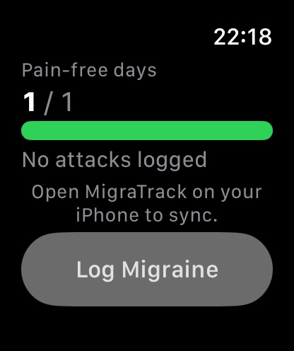</button><figcaption>1 / 1 and the link hint</figcaption></figure>
      </div>
    </article>

    <article class="step" id="s2">
      <div class="num">2</div>
      <div class="story">
        <span class="device phone">iPhone</span>
        <h2>Siri and Spotlight before setup</h2>
        <p>The user searches "Log Migraine" in Spotlight before the first app launch. The App Shortcut is the top hit. Before onboarding, the app has no preset to log, so the shortcut saves nothing.</p>
        <p>Spotlight shows <strong>"Finish setup in MigraTrack first."</strong> with Continue. Continue opens the app on the welcome screen. Siri and the Action button give the same answer.</p>
        <div class="check">SQLite iPhone: no episode from the shortcut</div>
      </div>
      <div class="shots">
        <figure class="wide flat" style="width:min(320px,100%)"><button class="shot" type="button">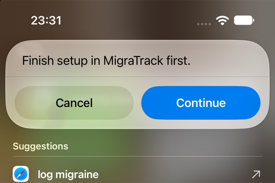</button><figcaption>The shortcut before onboarding</figcaption></figure>
      </div>
    </article>

    <article class="step" id="s3">
      <div class="num">3</div>
      <div class="story">
        <span class="device phone">iPhone</span>
        <h2>Welcome screen and legal texts</h2>
        <p>The icon is a 5 × 5 grid of day dots with one bright attack day. The welcome screen shows the same dot grid as the brand mark. An example card shows a 30-day strip with the label "Example" and <strong>24 pain-free days</strong>.</p>
        <p>The links under Get Started open the Terms of Service and the Privacy Policy in the app. The texts ship with the app, so they open offline. The Terms start with "Not medical advice".</p>
      </div>
      <div class="shots">
        <figure><button class="shot" type="button">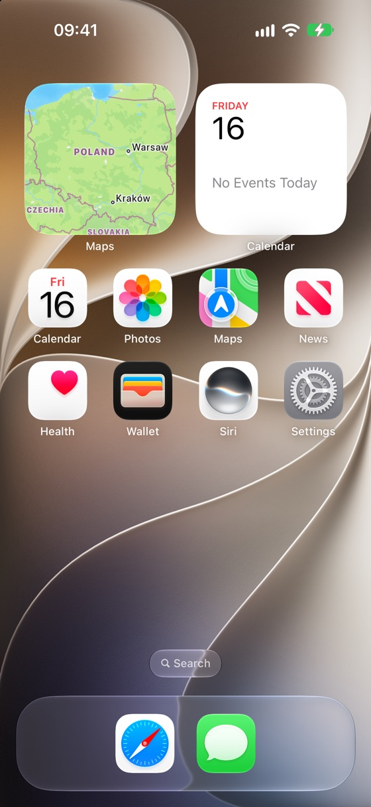</button><figcaption>Icon: 5 × 5 day dots</figcaption></figure>
        <figure><button class="shot" type="button">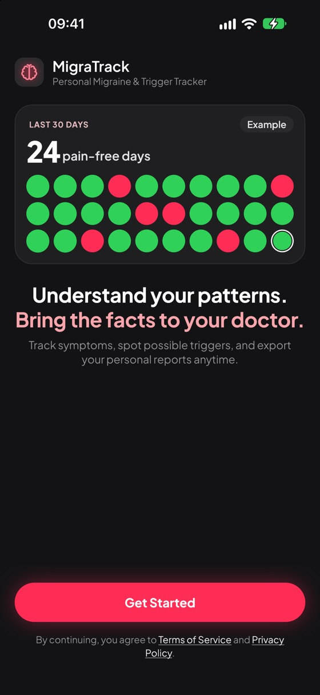</button><figcaption>Welcome screen with the example</figcaption></figure>
        <figure><button class="shot" type="button">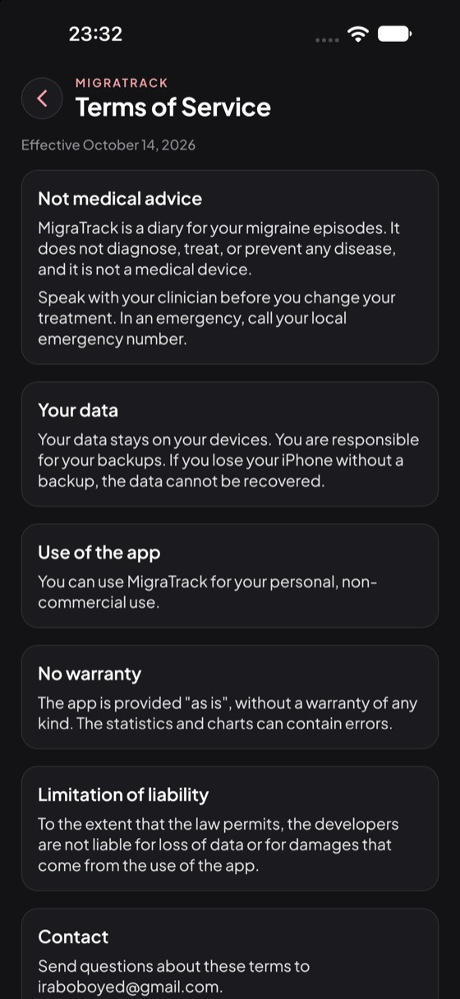</button><figcaption>Terms of Service in the app</figcaption></figure>
      </div>
    </article>

    <article class="step" id="s4">
      <div class="num">4</div>
      <div class="story">
        <span class="device phone">iPhone</span>
        <h2>Onboarding step 1: diagnoses and baseline</h2>
        <p>Get Started opens step 1 of 3. A back button and the edge swipe return to the welcome screen. The user selects <strong>Migraine with aura</strong> and <strong>Chronic Migraine</strong>.</p>
        <p>Chronic Migraine uses the ICHD-3 text "15 or more headache days a month". The frequency ranges do not overlap: &lt;1, 1–4, 5–7 and 8+ a month. The user selects 5–7 a month, 4–12 h and a typical intensity of 6.</p>
        <p>Continue stays inactive until the user selects one diagnosis.</p>
      </div>
      <div class="shots">
        <figure><button class="shot" type="button">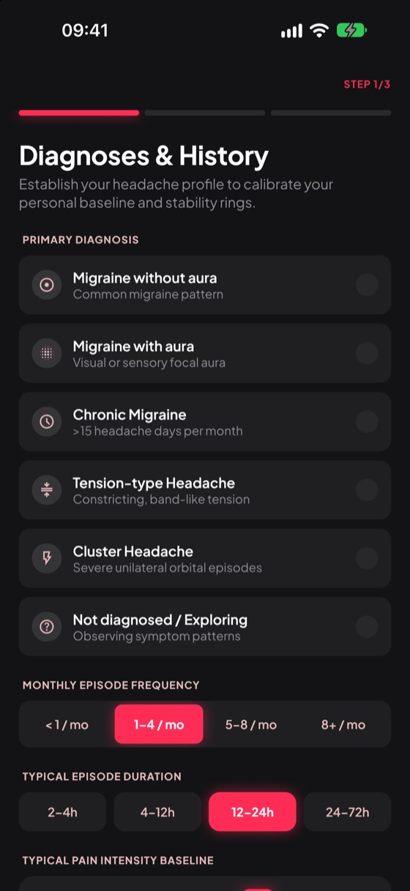</button><figcaption>Step 1: diagnoses</figcaption></figure>
        <figure><button class="shot" type="button">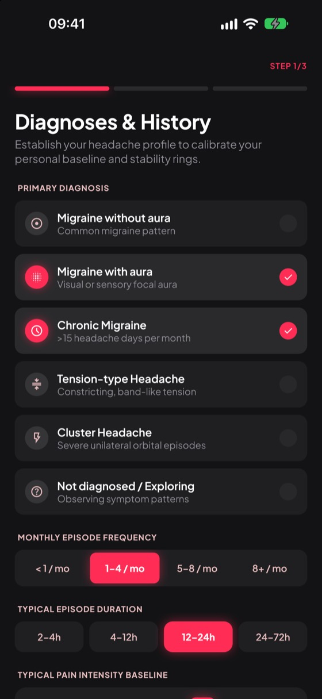</button><figcaption>Two diagnoses selected</figcaption></figure>
        <figure><button class="shot" type="button">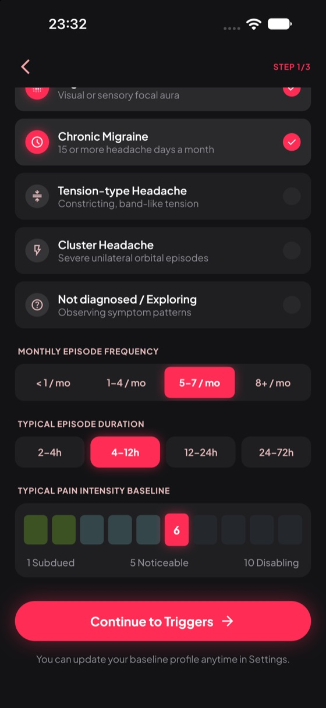</button><figcaption>5–7 / mo, 4–12 h, intensity 6</figcaption></figure>
      </div>
    </article>

    <article class="step" id="s5">
      <div class="num">5</div>
      <div class="story">
        <span class="device phone">iPhone</span>
        <h2>Step 2: Your Triggers, with a custom one</h2>
        <p>The step is "Your Triggers". The check mark takes the color of the category: weather is cyan, sleep is green, diet is orange. The user selects pressure drop, bright light, poor sleep and caffeine.</p>
        <p>"Add custom trigger" opens a system alert with a text field. The new trigger <strong>Flashing neon signs</strong> appears in the Custom section and is selected.</p>
      </div>
      <div class="shots">
        <figure><button class="shot" type="button">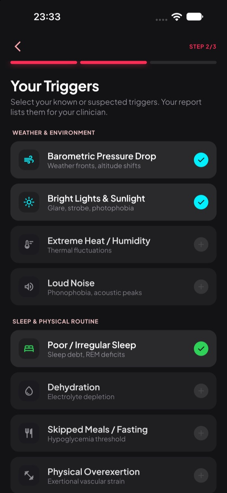</button><figcaption>Weather and sleep</figcaption></figure>
        <figure><button class="shot" type="button">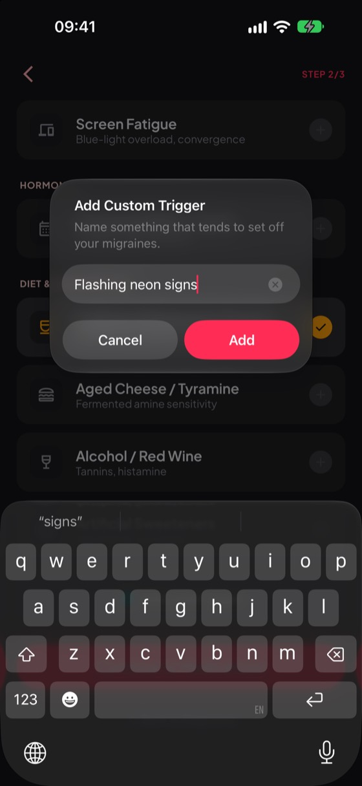</button><figcaption>System alert for a custom trigger</figcaption></figure>
        <figure><button class="shot" type="button">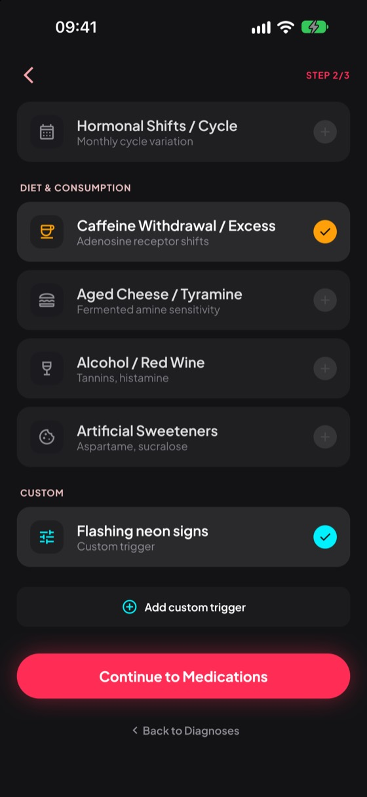</button><figcaption>Caffeine and the custom trigger</figcaption></figure>
      </div>
    </article>

    <article class="step" id="s6">
      <div class="num">6</div>
      <div class="story">
        <span class="device phone">iPhone</span>
        <h2>Step 3: Treatment Blueprint</h2>
        <p>The acute medications <strong>Ibuprofen 400mg</strong> and <strong>Sumatriptan 50mg</strong> become the preset. Each new log on the iPhone and on the watch gets them.</p>
        <p>The preventive Riboflavin 400mg goes into the profile and the report. Under Finish Setup, a reminder says: "MigraTrack is a diary, not medical advice. Talk to your doctor before you change your treatment."</p>
      </div>
      <div class="shots">
        <figure><button class="shot" type="button">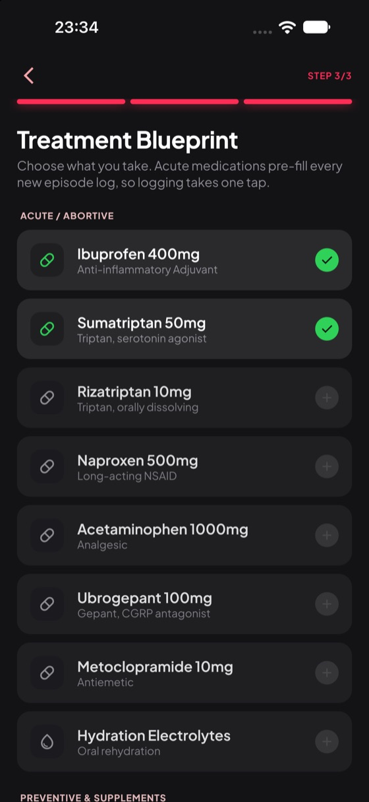</button><figcaption>Acute medications</figcaption></figure>
        <figure><button class="shot" type="button">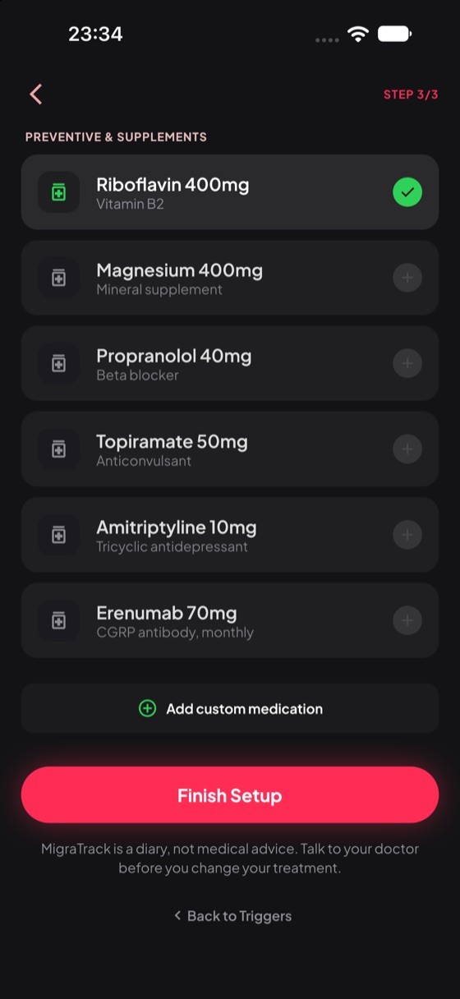</button><figcaption>Prevention and the doctor reminder</figcaption></figure>
      </div>
    </article>

    <article class="step" id="s7">
      <div class="num">7</div>
      <div class="story">
        <span class="device phone">iPhone</span>
        <h2>Summary and Apple Health</h2>
        <p>Finish Setup opens the Summary. The "Last 30 days" card shows <strong>1 of 1 tracked day</strong> without an attack. The strip of 30 dots starts on 17 September. The days before onboarding are gray, and a note says that they are not tracked. The doctor reminder is under Log Migraine Episode.</p>
        <p>The Sleep card offers Apple Health. The HealthKit sheet shows our text: MigraTrack reads only last night's sleep and shows it on the Summary. After the sheet, the card shows the row "Sleep last night". The simulator has no sleep data, so the row shows "Not recorded" with a hint.</p>
      </div>
      <div class="shots">
        <figure><button class="shot" type="button">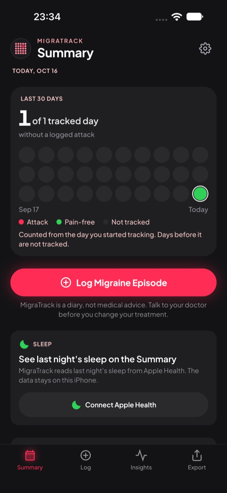</button><figcaption>New user: 1 of 1, Not tracked</figcaption></figure>
        <figure><button class="shot" type="button">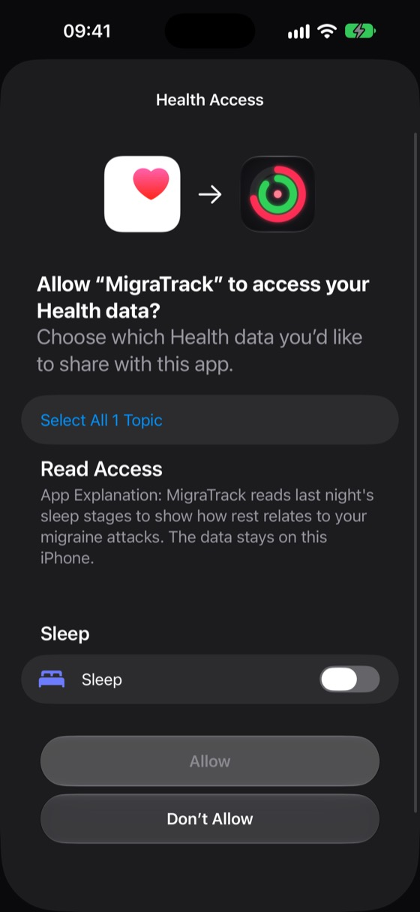</button><figcaption>Health: last night's sleep only</figcaption></figure>
        <figure><button class="shot" type="button">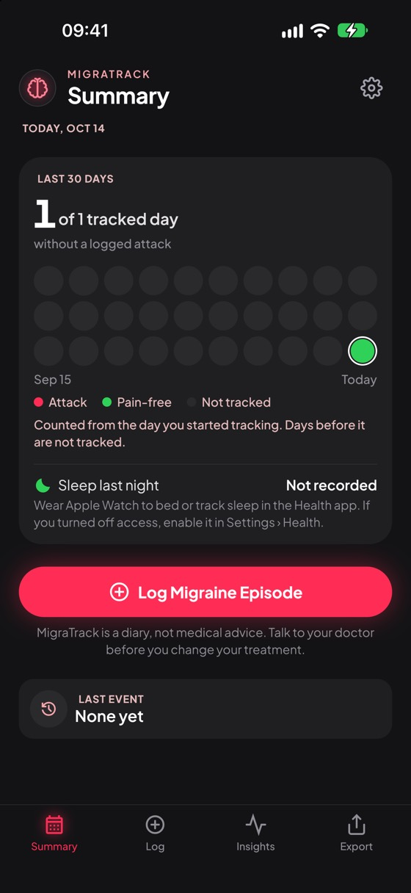</button><figcaption>No sleep data: Not recorded</figcaption></figure>
      </div>
    </article>

    <article class="step" id="s8">
      <div class="num">8</div>
      <div class="story">
        <span class="device phone">iPhone</span>
        <h2>Log an attack on the iPhone</h2>
        <p>The Log tab opens with the preset: intensity 6 and the two acute medications. The user sets <strong>9</strong> and selects Left Temple, photophobia and nausea.</p>
        <p>The new <strong>Possible Triggers</strong> card shows the five known triggers, but selects none of them. The user selects Bright Lights and Flashing neon signs. Add Trigger opens the rest of the catalog, and the user adds Skipped Meals.</p>
        <p>Add Medication opens a system action sheet with the catalog and "Other Medication…". The user adds Hydration Electrolytes. "Episode Start" at the bottom shows Now.</p>
      </div>
      <div class="shots">
        <figure><button class="shot" type="button">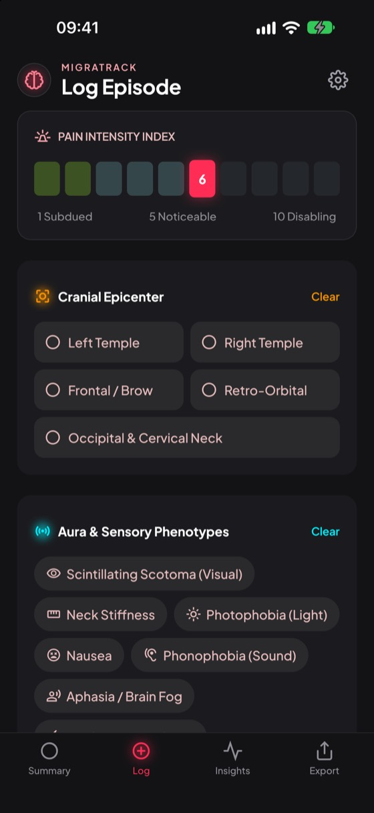</button><figcaption>The form opens with the preset</figcaption></figure>
        <figure><button class="shot" type="button">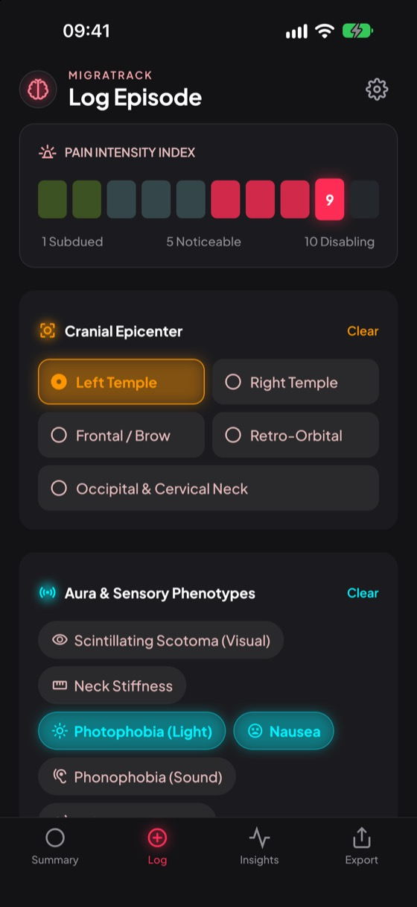</button><figcaption>Intensity 9, location, symptoms</figcaption></figure>
        <figure><button class="shot" type="button">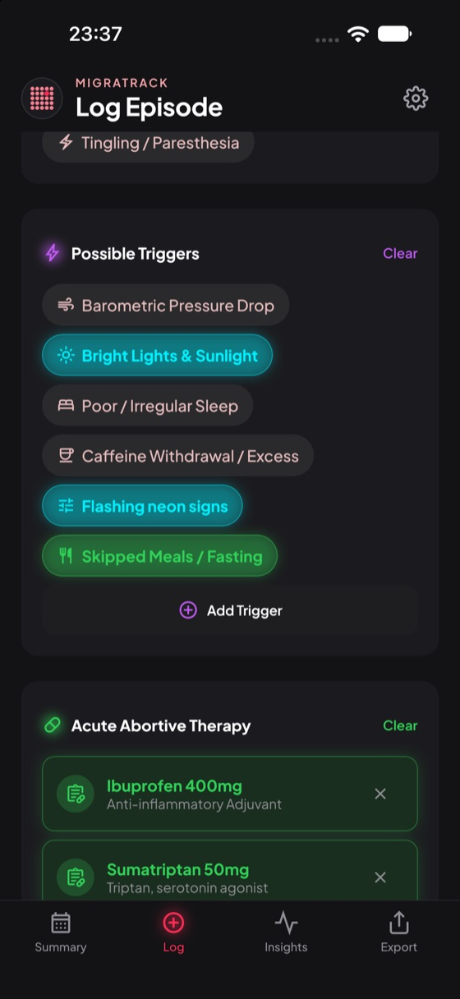</button><figcaption>Possible Triggers in the form</figcaption></figure>
        <figure><button class="shot" type="button">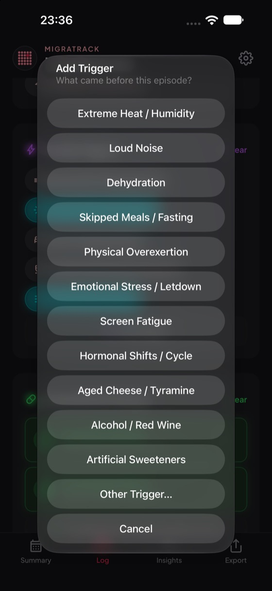</button><figcaption>Add Trigger: the rest of the catalog</figcaption></figure>
        <figure><button class="shot" type="button">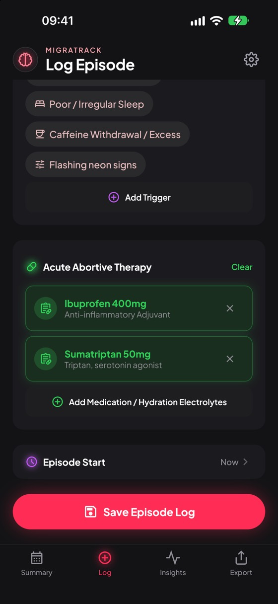</button><figcaption>Medications of the profile</figcaption></figure>
        <figure><button class="shot" type="button">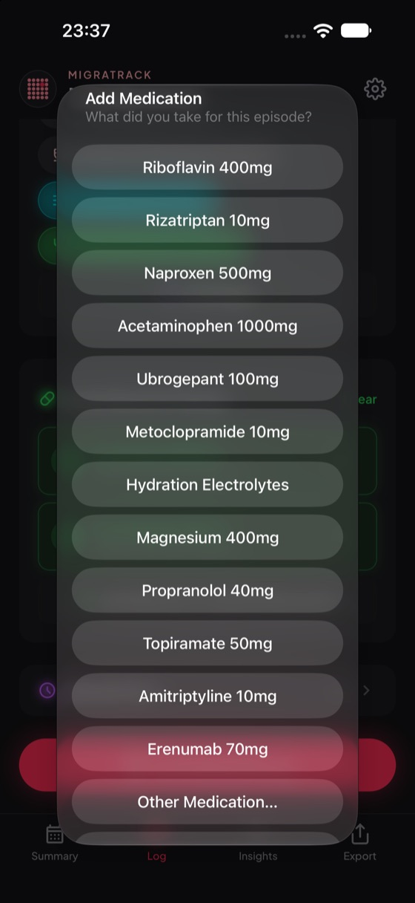</button><figcaption>Add Medication</figcaption></figure>
        <figure><button class="shot" type="button">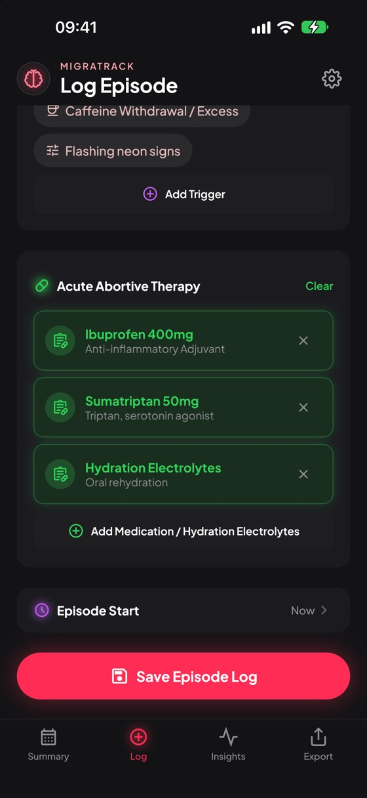</button><figcaption>Ready to save</figcaption></figure>
      </div>
    </article>

    <article class="step" id="s9">
      <div class="num">9</div>
      <div class="story">
        <span class="device phone">iPhone</span>
        <h2>Save and the new Summary</h2>
        <p>"Save Episode Log" saves the attack, gives a haptic, and returns to the Summary with the banner "Episode saved. Take it easy and stay in low light." Now the card shows <strong>0 of 1</strong> tracked day: the Today dot is pink. Last Event shows the symptom and 9/10.</p>
        <div class="check">SQLite iPhone: <code>9 | App | Ibuprofen, Sumatriptan, Hydration Electrolytes | Bright Lights, Flashing neon signs, Skipped Meals</code></div>
      </div>
      <div class="shots">
        <figure><button class="shot" type="button">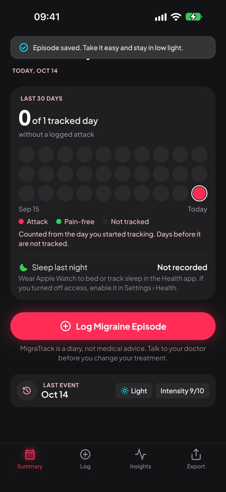</button><figcaption>The banner</figcaption></figure>
        <figure><button class="shot" type="button">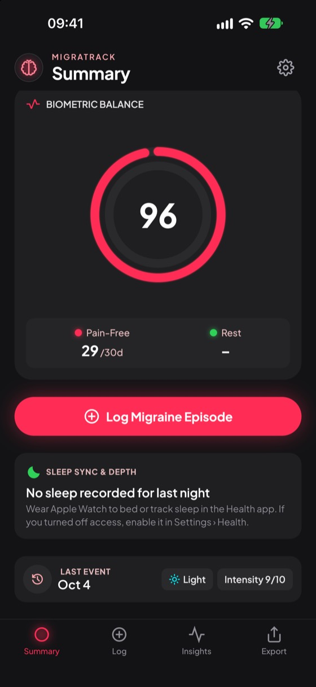</button><figcaption>Summary: 0 of 1, Last Event 9/10</figcaption></figure>
      </div>
    </article>

    <article class="step watch" id="s10">
      <div class="num">10</div>
      <div class="story">
        <span class="device watch">Apple Watch</span>
        <h2>The watch gets the preset and the attacks</h2>
        <p>The iPhone sends the preset and the attacks of 60 days through WatchConnectivity. The link hint is gone and Log Migraine is active. The watch shows <strong>0 / 1</strong>: today already had an attack. Under the gauge: "Last attack 16 Oct".</p>
        <p>The watch copy also has the triggers of the attack.</p>
      </div>
      <div class="shots">
        <figure class="watch"><button class="shot" type="button">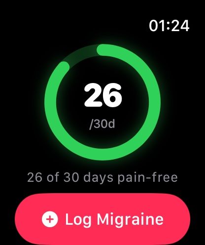</button><figcaption>0 / 1 with the iPhone data</figcaption></figure>
      </div>
    </article>

    <article class="step watch" id="s11">
      <div class="num">11</div>
      <div class="story">
        <span class="device watch">Apple Watch</span><span class="device phone">iPhone</span>
        <h2>Log in the watch app</h2>
        <p>"Log Migraine" opens Pain Intensity. The value comes from the iPhone preset (6), and the gauge color follows the severity. The Digital Crown changes it.</p>
        <p>"Save Episode" saves the attack, and the same sheet shows a green check mark. The attack gets the intensity and the medications of the profile, but no triggers. "Done" returns to the summary. The number stays <strong>0 / 1</strong>, because 16 October already was an attack day.</p>
        <p>The day card in the iPhone calendar shows both attacks: the log from the iPhone and the log from the watch.</p>
        <div class="check">SQLite iPhone: <code>6 | App | Ibuprofen, Sumatriptan</code> at 23:41, watch queue <code>0</code></div>
      </div>
      <div class="shots">
        <figure class="watch"><button class="shot" type="button">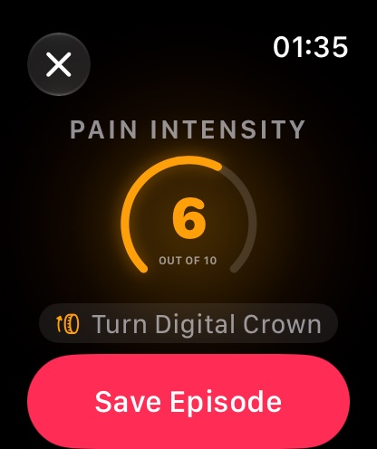</button><figcaption>Preset from the iPhone: 6/10</figcaption></figure>
        <figure class="watch"><button class="shot" type="button">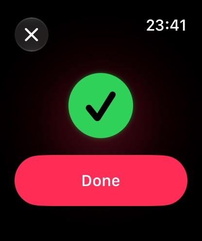</button><figcaption>Episode logged</figcaption></figure>
        <figure class="watch"><button class="shot" type="button">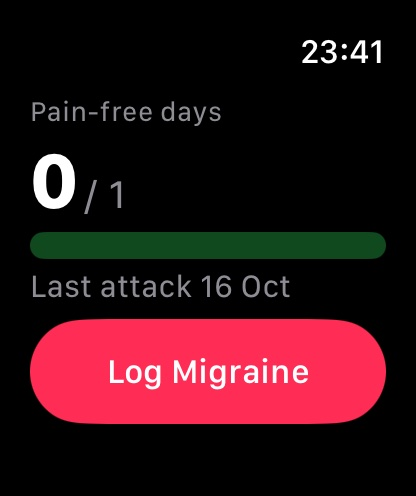</button><figcaption>After the log: 0 / 1</figcaption></figure>
        <figure><button class="shot" type="button">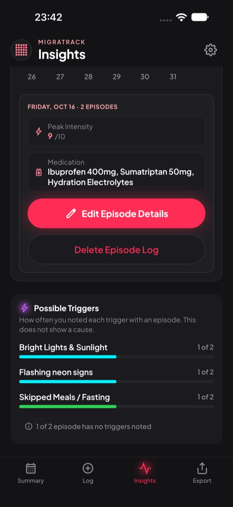</button><figcaption>iPhone: 16 October, 2 episodes</figcaption></figure>
      </div>
    </article>

    <article class="step watch" id="s12">
      <div class="num">12</div>
      <div class="story">
        <span class="device watch">Apple Watch</span>
        <h2>The Log Migraine complication on the watch face</h2>
        <p>The watch face editor has one MigraTrack complication, "Log Migraine", in four styles: circular, corner, rectangular and inline. On Infograph it is in the corner and in the right circle.</p>
        <p>A tap opens the app on Pain Intensity. On the watch face, watchOS lets a complication only open its app. The tap saves nothing; only "Save Episode" saves. Thus an accidental tap needs no Undo.</p>
        <p>These screenshots are from 13 October. The complication did not change since then, and it stayed on the face after the new install.</p>
        <div class="check">Tap on LOG: Pain Intensity opens, the number of attacks on both devices does not change</div>
      </div>
      <div class="shots">
        <figure class="watch"><button class="shot" type="button">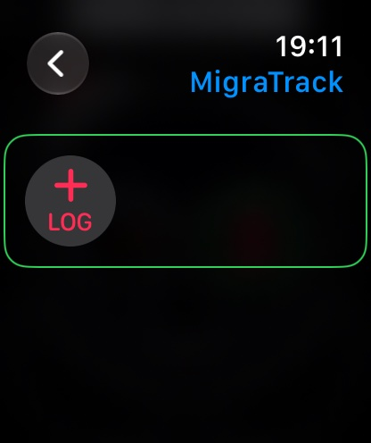</button><figcaption>Gallery: circular</figcaption></figure>
        <figure class="watch"><button class="shot" type="button">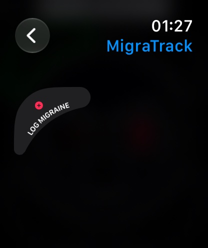</button><figcaption>Gallery: corner</figcaption></figure>
        <figure class="watch"><button class="shot" type="button">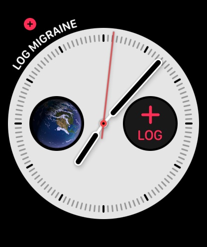</button><figcaption>Corner and circle on Infograph</figcaption></figure>
        <figure class="watch"><button class="shot" type="button"></button><figcaption>A tap opens Pain Intensity</figcaption></figure>
      </div>
    </article>

    <article class="step watch" id="s13">
      <div class="num">13</div>
      <div class="story">
        <span class="device watch">Apple Watch</span>
        <h2>Smart Stack and Control</h2>
        <p>In the Smart Stack the same complication is rectangular: "Log Migraine" with a bar and the real count, here <strong>24 of 30 days pain-free</strong> after step 24. Above it is the Control "Log Migraine" for watchOS 26.</p>
        <p>A tap on the widget or on the Control also opens Pain Intensity and saves nothing. Each log goes through the app, so the attack goes to the iPhone at once.</p>
        <div class="check">Tap on the Control (13 October): Pain Intensity opens, the number of attacks on both devices does not change</div>
      </div>
      <div class="shots">
        <figure class="watch"><button class="shot" type="button">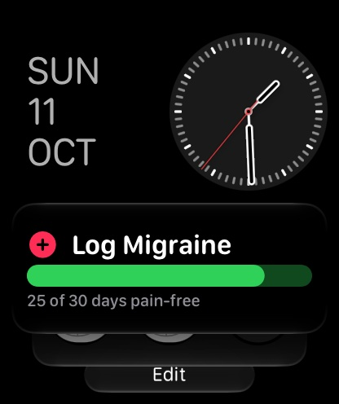</button><figcaption>Control and widget: 24 of 30</figcaption></figure>
        <figure class="watch"><button class="shot" type="button">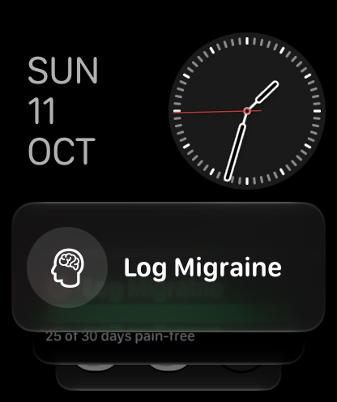</button><figcaption>Control in the Smart Stack</figcaption></figure>
        <figure class="watch"><button class="shot" type="button">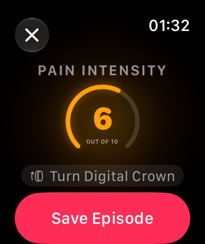</button><figcaption>A tap on the Control opens Pain Intensity</figcaption></figure>
      </div>
    </article>

    <article class="step" id="s14">
      <div class="num">14</div>
      <div class="story">
        <span class="device phone">iPhone</span>
        <h2>Insights on the first day</h2>
        <p>Insights counts only from the day tracking started. Weeks 1 and 2 of October are gray, and the legend adds <strong>Not Tracked</strong>. Week 3 has one tracked day, and it is an attack day, so its bar is all pink.</p>
        <p>Under the chart, the Possible Triggers card lists the triggers that the user noted, as "1 of 2" with a bar. The card says that it shows how often a trigger was noted, not a cause. A last line counts the episodes with no triggers: "1 of 2 episodes has no triggers noted". The watch log has none.</p>
      </div>
      <div class="shots">
        <figure><button class="shot" type="button">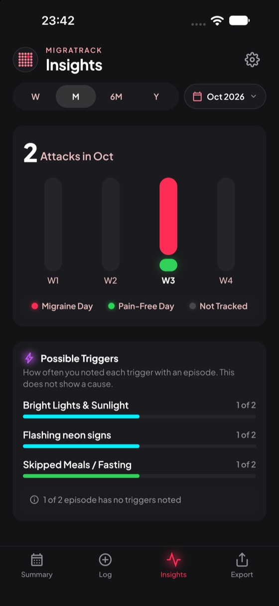</button><figcaption>Not Tracked and Possible Triggers</figcaption></figure>
      </div>
    </article>

    <article class="step" id="s15">
      <div class="num">15</div>
      <div class="story">
        <span class="device phone">iPhone</span>
        <h2>Manage the episode and the profile</h2>
        <p>A tap on Last Event opens a system sheet with Edit Episode and Delete Episode Log. Settings shows the profile: member since, the number of logs, the diagnoses, "5 known triggers" and the treatment.</p>
        <p>The name goes into a system alert and onto the report. The avatar then shows the initials. The Legal section opens the Privacy Policy and the Terms. Delete All Data says that the data is on this iPhone with a copy on the watch, and that device backups keep their copy. Here the user taps Cancel; step 25 deletes the data.</p>
      </div>
      <div class="shots">
        <figure><button class="shot" type="button">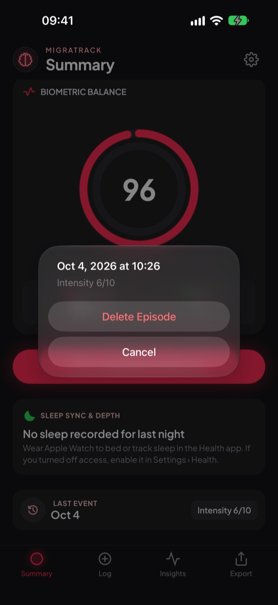</button><figcaption>Last Event sheet</figcaption></figure>
        <figure><button class="shot" type="button">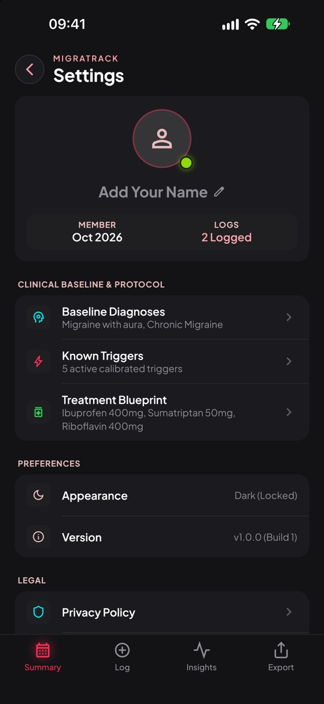</button><figcaption>Settings</figcaption></figure>
        <figure><button class="shot" type="button">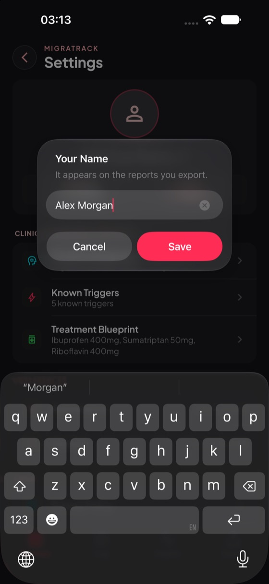</button><figcaption>Enter the name</figcaption></figure>
        <figure><button class="shot" type="button">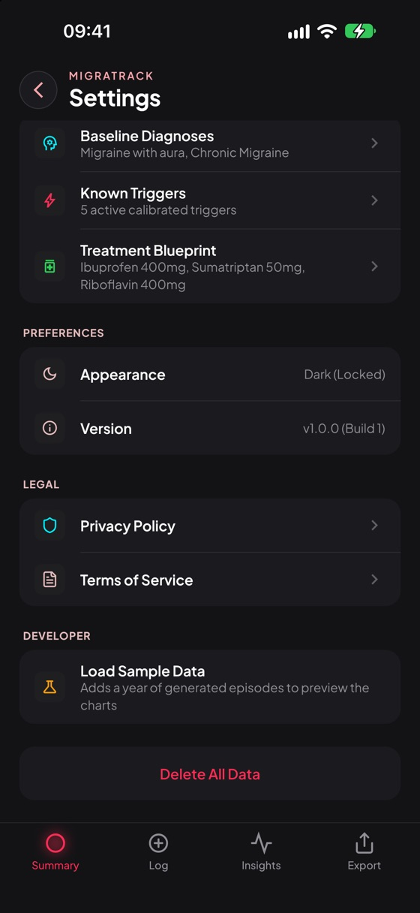</button><figcaption>Legal, Load Sample Data, Delete All Data</figcaption></figure>
        <figure><button class="shot" type="button">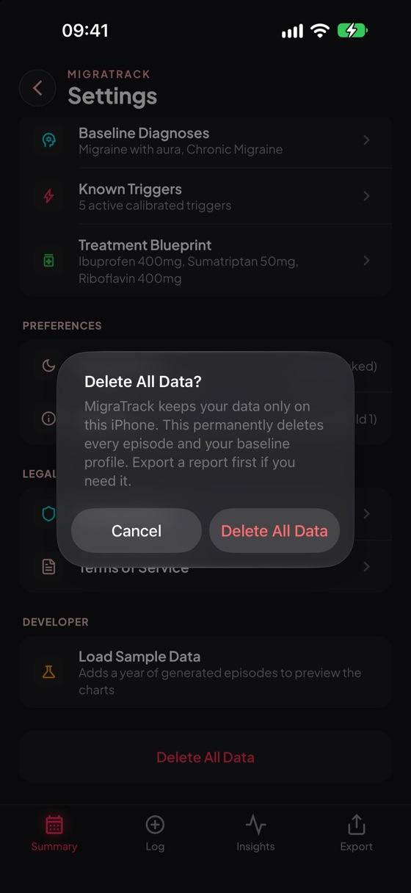</button><figcaption>Delete All Data confirmation</figcaption></figure>
      </div>
    </article>

    <article class="step" id="s16">
      <div class="num">16</div>
      <div class="story">
        <span class="device phone">iPhone</span>
        <h2>Spotlight and Siri after setup</h2>
        <p>Spotlight shows the App Shortcut "Log Migraine" as the top hit. A tap saves an attack with the preset, and the app does not open. Spotlight answers "Logged a migraine episode: intensity 6 of 10, with Ibuprofen 400mg, Sumatriptan 50mg." The same command works in Siri and on the Action button. The attack has no triggers until the user edits it.</p>
        <div class="check">SQLite iPhone: new <code>6 | QuickLog</code> on 17 October at 03:16</div>
      </div>
      <div class="shots">
        <figure class="wide flat" style="width:min(320px,100%)"><button class="shot" type="button">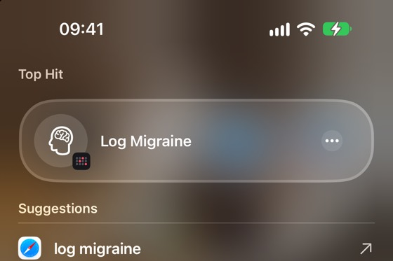</button><figcaption>App Shortcut in Spotlight</figcaption></figure>
        <figure class="wide flat" style="width:min(320px,100%)"><button class="shot" type="button">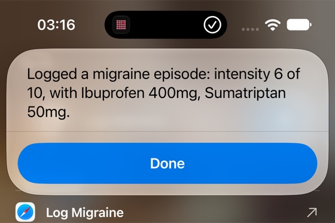</button><figcaption>The answer after the log</figcaption></figure>
      </div>
    </article>

    <article class="step" id="s17">
      <div class="num">17</div>
      <div class="story">
        <span class="device phone">iPhone</span>
        <h2>Insights for a week, a month, six months and a year</h2>
        <p>For the charts I loaded a year of sample data (Settings › Developer). A bar has migraine days (pink) and pain-free days (green). In the week view, the pink part shows the peak pain of the day.</p>
        <p>The trend badge compares the last 7, 30, 182 or 365 days with the same span before. Without attacks in the earlier span, there is no badge. The Possible Triggers card follows the period: the year view counts 27 episodes.</p>
      </div>
      <div class="shots">
        <figure><button class="shot" type="button">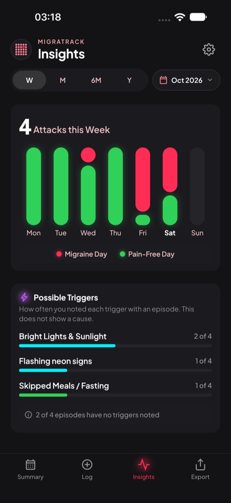</button><figcaption>Week: 4 attacks</figcaption></figure>
        <figure><button class="shot" type="button">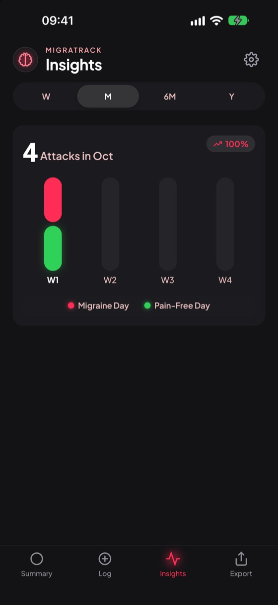</button><figcaption>Month: 4 attacks, +200%</figcaption></figure>
        <figure><button class="shot" type="button">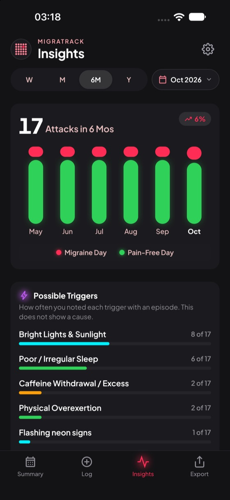</button><figcaption>6 months: 17 attacks, +6%</figcaption></figure>
        <figure><button class="shot" type="button">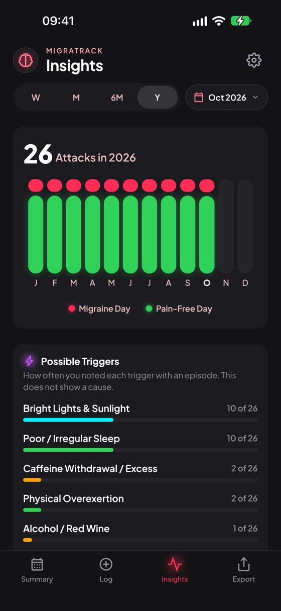</button><figcaption>Year: 27 attacks</figcaption></figure>
      </div>
    </article>

    <article class="step" id="s18">
      <div class="num">18</div>
      <div class="story">
        <span class="device phone">iPhone</span>
        <h2>Export to PDF and Excel</h2>
        <p>Export shows the number of episodes and the report range. An action sheet changes the range. The toggles select the sections, and <strong>Possible Triggers</strong> is a new toggle. Medication Logs says "Dosages and usage totals", because the report shows no time of intake.</p>
        <p>The PDF opens in Quick Look. Page 1 has the profile, the pain chart, the medications and the symptoms. Page 2 has the "Possible Triggers Noted" section and the episode log with a Triggers column. The disclaimer line ends the last page with content and does not start a page of its own. Excel goes through the system share sheet.</p>
        <div class="check">.xlsx on the Mac: <code>unzip -t</code> without errors, 11 rows for 90 days, dates as real dates, a Possible Triggers column</div>
      </div>
      <div class="shots">
        <figure><button class="shot" type="button">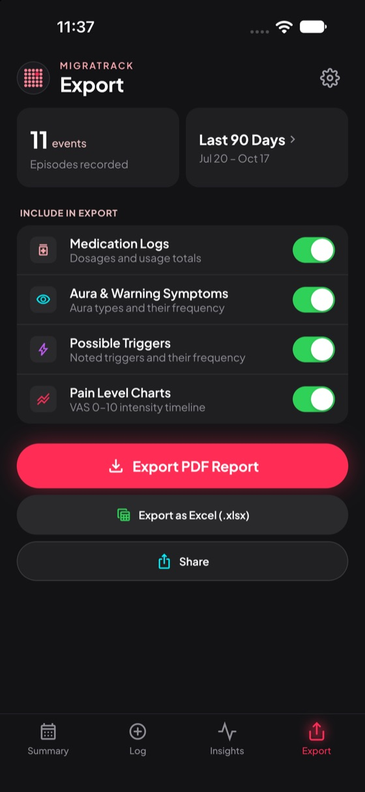</button><figcaption>Export</figcaption></figure>
        <figure><button class="shot" type="button">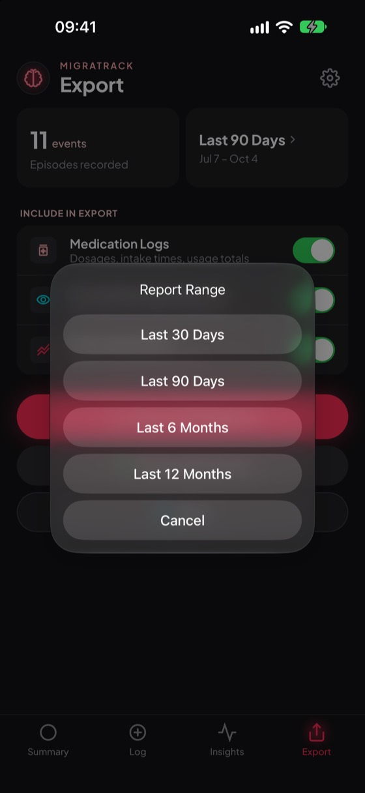</button><figcaption>Report range</figcaption></figure>
        <figure><button class="shot" type="button"></button><figcaption>PDF page 1</figcaption></figure>
        <figure><button class="shot" type="button"></button><figcaption>PDF page 2: triggers and log</figcaption></figure>
        <figure><button class="shot" type="button"></button><figcaption>Share sheet with .xlsx</figcaption></figure>
        <figure class="wide"><button class="shot" type="button"></button><figcaption>Episodes sheet of the same file on the Mac</figcaption></figure>
      </div>
    </article>
  </section>

  <section aria-labelledby="update">
    <div class="section-head">
      <span class="eyebrow">Calendar and editing</span>
      <h2 id="update">The Insights calendar and episode edits</h2>
      <p>Steps 19–25 use the data of steps 1–18 and the sample data. The user opens the calendar, edits and deletes attacks, logs an attack on a past day, and at the end deletes all data. I compared the result with SQLite on the iPhone and on the watch.</p>
    </div>
    <div class="journey">

    <article class="step" id="s19">
      <div class="num">19</div>
      <div class="story">
        <span class="device phone">iPhone</span>
        <h2>The month pill opens the calendar</h2>
        <p>Next to W, M, 6M and Y is a month pill. A tap on it opens the calendar under the chart, and a second tap closes it.</p>
        <p>The week starts on Monday. Attack days are pink with a dot in the corner. The pill <strong>3 Attack Days</strong> counts them in the month. A tap on a day without an attack selects it and shows "Log Migraine Episode".</p>
        <p>A swipe on the grid changes the month. A tap on the month name opens the system month and year wheels.</p>
      </div>
      <div class="shots">
        <figure><button class="shot" type="button"></button><figcaption>Calendar under the chart</figcaption></figure>
        <figure><button class="shot" type="button"></button><figcaption>Day without an attack</figcaption></figure>
        <figure><button class="shot" type="button"></button><figcaption>Month and year wheels</figcaption></figure>
      </div>
    </article>

    <article class="step" id="s20">
      <div class="num">20</div>
      <div class="story">
        <span class="device phone">iPhone</span>
        <h2>Day card and Edit Episode</h2>
        <p>A tap on an attack day shows the day card: date and time, peak intensity and medications. Under them are "Edit Episode Details" and "Delete Episode Log".</p>
        <p>Edit Episode opens the Log form with the data of the attack, also its triggers. "Episode Start" opens the system date and time picker. A future time is not available.</p>
        <p>The user moves the attack from 28 to <strong>27 September</strong> and taps "Update Episode Log". A banner confirms the edit, and the calendar shows the new day.</p>
        <div class="check">SQLite iPhone and watch: <code>sample-18 | 2026-09-27 17:05</code></div>
      </div>
      <div class="shots">
        <figure><button class="shot" type="button"></button><figcaption>Day card: peak 5/10</figcaption></figure>
        <figure><button class="shot" type="button"></button><figcaption>The form with the attack data</figcaption></figure>
        <figure><button class="shot" type="button"></button><figcaption>Triggers, Episode Start, Update</figcaption></figure>
        <figure><button class="shot" type="button"></button><figcaption>Date and time picker</figcaption></figure>
        <figure><button class="shot" type="button"></button><figcaption>Episode updated: now 27 September</figcaption></figure>
      </div>
    </article>

    <article class="step" id="s21">
      <div class="num">21</div>
      <div class="story">
        <span class="device phone">iPhone</span>
        <h2>Log on a past day and delete</h2>
        <p>On a past day without an attack, "Log Migraine Episode" opens Log Episode. The start is that day at the current time of day: <strong>Sep 28, 03:33</strong>. The form takes the preset, as the Log tab does (step 8).</p>
        <p>The calendar shows the new attack at once. "Delete Episode Log" on the day card asks for a confirmation. The alert shows the date, the time and the intensity, and says that the episode leaves the history and the reports.</p>
        <div class="check">SQLite iPhone and watch: no attack on <code>2026-09-28</code></div>
      </div>
      <div class="shots">
        <figure><button class="shot" type="button"></button><figcaption>Log on 28 September, 03:33</figcaption></figure>
        <figure><button class="shot" type="button"></button><figcaption>Saved on 28 September</figcaption></figure>
        <figure><button class="shot" type="button"></button><figcaption>Delete confirmation</figcaption></figure>
      </div>
    </article>

    <article class="step" id="s22">
      <div class="num">22</div>
      <div class="story">
        <span class="device phone">iPhone</span>
        <h2>The pill month sets the chart period</h2>
        <p>M shows the pill month, 6M the six months that end with it, and Y its year. W shows the week with the last day of the month. For the current month, it is the week with today.</p>
        <p>With Sep 2026, W shows the week from 28 September to 4 October: <strong>0 attacks</strong>. The badge shows −100%, because the week before had the attack of 27 September. A period without episodes has no Possible Triggers card.</p>
      </div>
      <div class="shots">
        <figure><button class="shot" type="button"></button><figcaption>W with Sep 2026: week of 28 September</figcaption></figure>
      </div>
    </article>

    <article class="step" id="s23">
      <div class="num">23</div>
      <div class="story">
        <span class="device phone">iPhone</span>
        <h2>Several attacks on one day</h2>
        <p>16 October has two attacks: the iPhone log and the watch log. The day card shows the peak of the day and all medications of the day (step 11). "Edit Episode Details" and "Delete Episode Log" first ask which attack to open.</p>
        <p>The user opens the watch log, adds the trigger Poor / Irregular Sleep, and moves it to <strong>15 October</strong>. The form shows the old start as "Yesterday, 23:41". The calendar then shows attack days 14, 15, 16 and 17 October.</p>
        <div class="check">SQLite iPhone and watch: <code>2026-10-15 23:41 | 6 | Poor / Irregular Sleep</code></div>
      </div>
      <div class="shots">
        <figure><button class="shot" type="button"></button><figcaption>Choose one of two attacks</figcaption></figure>
        <figure><button class="shot" type="button"></button><figcaption>Watch log: trigger added, moved</figcaption></figure>
        <figure><button class="shot" type="button"></button><figcaption>After the move: 15 October</figcaption></figure>
      </div>
    </article>

    <article class="step watch" id="s24">
      <div class="num">24</div>
      <div class="story">
        <span class="device watch">Apple Watch</span><span class="device phone">iPhone</span>
        <h2>The watch gets the edits from the iPhone</h2>
        <p>After each edit the iPhone sends the attacks of 60 days to the watch. The watch counts the pain-free days from the same data as the "Last 30 days" card. Both devices show <strong>24 of 30</strong>: attacks on 22 and 27 September and on 14, 15, 16 and 17 October.</p>
        <p>The iPhone keeps the ids of the attacks that came from the watch. Thus a repeated batch from the watch does not bring back an attack that the iPhone deleted. The sync tests check this.</p>
        <div class="check">SQLite watch, as on the iPhone: <code>sample-18 | 2026-09-27 17:05</code> and <code>2026-10-15 23:41 | 6</code></div>
      </div>
      <div class="shots">
        <figure class="watch"><button class="shot" type="button"></button><figcaption>Watch: 24 / 30</figcaption></figure>
        <figure><button class="shot" type="button"></button><figcaption>iPhone: 24 of 30</figcaption></figure>
      </div>
    </article>

    <article class="step" id="s25">
      <div class="num">25</div>
      <div class="story">
        <span class="device phone">iPhone</span><span class="device watch">Apple Watch</span>
        <h2>Delete All Data</h2>
        <p>The app has no account server. Delete All Data in Settings erases every episode and the profile on this iPhone after the confirmation of step 15. The iPhone then shows the welcome screen of step 3 again.</p>
        <p>The watch deletes its copy at the next sync. It shows <strong>1 / 1</strong> and the link hint again, and Log Migraine is gray until a new onboarding.</p>
        <div class="check">SQLite iPhone and watch: <code>0</code> episodes</div>
      </div>
      <div class="shots">
        <figure><button class="shot" type="button"></button><figcaption>iPhone: the welcome screen again</figcaption></figure>
        <figure class="watch"><button class="shot" type="button"></button><figcaption>Watch: the copy is deleted</figcaption></figure>
      </div>
    </article>
    </div>
  </section>

  <section aria-labelledby="checks">
    <div class="section-head">
      <span class="eyebrow">Data</span>
      <h2 id="checks">What the databases show</h2>
      <p>I compared each action with SQLite on the iPhone and in the App Group on the watch. A sync is complete when the watch queue is empty. For steps 19–25 I compared the final state of both databases.</p>
    </div>
    <div class="table-wrap">
      <table>
        <thead><tr><th>Action</th><th>Where saved</th><th>What the database has</th><th>Result</th></tr></thead>
        <tbody>
          <tr><td>App Shortcut before onboarding</td><td>iPhone</td><td>No episode</td><td><span class="pill pass">Passed</span></td></tr>
          <tr><td>Log on the iPhone, 9/10</td><td>iPhone</td><td><code>9 | App</code>, three medications, three triggers</td><td><span class="pill pass">Passed</span></td></tr>
          <tr><td>Log in the watch app, 6/10</td><td>watch → iPhone</td><td><code>6 | App</code> on the iPhone at 23:41, watch queue 0</td><td><span class="pill pass">Passed</span></td></tr>
          <tr><td>Tap on the face complication</td><td>watch</td><td>Pain Intensity opens, no new episode</td><td><span class="pill pass">Passed 13 Oct</span></td></tr>
          <tr><td>Tap on the Control in the Smart Stack</td><td>watch</td><td>Pain Intensity opens, no new episode</td><td><span class="pill pass">Passed 13 Oct</span></td></tr>
          <tr><td>App Shortcut from Spotlight</td><td>iPhone</td><td>New <code>6 | QuickLog</code> at 03:16</td><td><span class="pill pass">Passed</span></td></tr>
          <tr><td>Export .xlsx</td><td>file</td><td>Archive without errors, 11 rows for 90 days</td><td><span class="pill pass">Passed</span></td></tr>
          <tr><td>Edit Episode: move to 27 September</td><td>iPhone → watch</td><td><code>sample-18 | 2026-09-27 17:05</code> on both</td><td><span class="pill pass">Passed</span></td></tr>
          <tr><td>Log on 28 September, then Delete</td><td>iPhone → watch</td><td>No attack on <code>2026-09-28</code> on both</td><td><span class="pill pass">Passed</span></td></tr>
          <tr><td>Move the watch log to 15 October, add a trigger</td><td>iPhone → watch</td><td><code>2026-10-15 23:41 | 6 | Poor / Irregular Sleep</code> on both</td><td><span class="pill pass">Passed</span></td></tr>
          <tr><td>Delete All Data</td><td>iPhone → watch</td><td>0 episodes on both, the watch shows the link hint</td><td><span class="pill pass">Passed</span></td></tr>
        </tbody>
      </table>
    </div>
  </section>

  <section aria-labelledby="notes">
    <div class="section-head">
      <span class="eyebrow">Notes</span>
      <h2 id="notes">What I noticed</h2>
      <p>No step failed, and no data was lost. Below are the four faults that this run found and that are now fixed, two design notes, one platform limit and the simulator details.</p>
    </div>
    <div class="notes">
      <div class="note">
        <h3><span class="pill pass">Fixed</span>Four small faults of this run</h3>
        <ul>
          <li>The Medication Logs toggle in Export promised intake times. It now says "Dosages and usage totals".</li>
          <li>The PDF of 11 episodes had a page 3 with only the disclaimer. The line now uses the footer space of the last page.</li>
          <li>Insights said "1 of 3 episode has no triggers noted". It now says "1 of 3 episodes has", and the PDF uses the same text.</li>
          <li>A bar with only attack days showed a green part. It is now all pink.</li>
        </ul>
      </div>
      <div class="note">
        <h3><span class="pill note">Design</span>Months in 6M and Y look similar</h3>
        <p>The pink part of a bar stays at 14% or more, so that one migraine day stays visible. Thus months with 1 and with 4 migraine days look the same. A smaller minimum or the number of days above the bar can help.</p>
      </div>
      <div class="note">
        <h3><span class="pill note">Design</span>The calendar mockups do not show all behavior</h3>
        <p>The mockups do not show the start time, the month change and a day with several attacks. The app uses system controls: the date picker in "Episode Start", the month wheels and the alert that asks for the attack. The day card has no duration, because the app does not record an end time.</p>
      </div>
      <div class="note">
        <h3><span class="pill note">watchOS</span>The complication and the Control only open the app</h3>
        <p>On the watch face, watchOS does not run a button action, it only opens the app. An action in the Smart Stack runs in the extension, and the extension cannot reach the iPhone. Thus each tap opens Pain Intensity, and the log goes to the iPhone at once.</p>
      </div>
      <div class="note">
        <h3><span class="pill sim">Simulator</span>Not related to the app</h3>
        <ul>
          <li>After <code>simctl install</code> on the watch, the iPhone saw the watch app as not installed. A second install of the iPhone app fixed it, and the data came at once.</li>
          <li>The Sleep switch in the HealthKit sheet does not react to a tap, and Select All did not help in this run. Read access stays hidden from the app, so the row shows "Not recorded" in both cases.</li>
          <li>In Always On mode, the watch does not take taps.</li>
          <li>The home screen and the Spotlight result (steps 3 and 16) are from the iPhone 18 Pro of 16 October, without the Fitness icon near MigraTrack.</li>
          <li><code>simctl openurl</code> does not work on the watch, so I checked the complication link with a tap on the face.</li>
        </ul>
      </div>
      <div class="note">
        <h3><span class="pill sim">Not checked</span>Needs a real device</h3>
        <ul>
          <li>The Control in the watch Control Center: the simulator does not open it. The Smart Stack Control works, step 13.</li>
          <li>The Digital Crown: my tool cannot turn it. The watch logs have the preset intensity 6.</li>
          <li>Real sleep data from Apple Health.</li>
          <li>The <code>transferUserInfo</code> queue: it does not arrive in the simulator, so I checked the direct message.</li>
        </ul>
      </div>
    </div>
  </section>
</main>

<dialog id="zoom" aria-label="Enlarged screenshot">
  
  <p id="zoom-caption"></p>
</dialog>

<script>
(function () {
  var dialog = document.getElementById("zoom");
  var img = document.getElementById("zoom-img");
  var caption = document.getElementById("zoom-caption");
  document.querySelectorAll(".shot").forEach(function (button) {
    button.addEventListener("click", function () {
      var source = button.querySelector("img");
      var figcaption = button.closest("figure").querySelector("figcaption");
      img.src = source.currentSrc || source.src;
      img.alt = source.alt;
      caption.textContent = figcaption ? figcaption.textContent : "";
      if (typeof dialog.showModal === "function") dialog.showModal();
    });
  });
  dialog.addEventListener("click", function () { dialog.close(); });
})();
</script>
